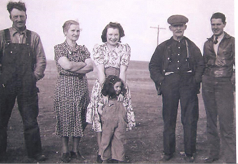

HOME
OUR PIONEERS....THE FAMILY OF BENJAMIN AND MARY

THE HOME PLACE IN THE COTEAU DES PRAIRIES OVERLOOKING THE WHETSTONE VALLEY
BENJAMIN RICHARDS FAMILY

BACK ROW FROM LEFT:
BENNY, BLISS, TITUS, MILTON, LESTER
FRONT ROW FROM LEFT:
MARTHA, MARY, GWEN, BEN, MARGARET

A WAGON TRAIL THROUGH THE PRAIRIE

MARY AND BEN WITH MILTON AND TITUS
BEN RICHARDS WAS BORN IN WALES ON MAY 8, 1866. HE CAME TO THE USA AT THE AGE OF 28 AND BECAME A CITIZEN IN 1896. HE WAS A FARM LABORER IN WISCONSIN FOR A FEW YEARS. THIS IS WHERE HE MET HIS WIFE MARY JONES. SHE WAS BORN IN WISCONSIN IN 1877. THEY WERE MARRIED FEBRUARY 27, 1901. THEY FARMED IN WISCONSIN FOR A FEW YEARS BEFORE COMING TO SOUTH DAKOTA WHERE THEY BOUGHT THE FARM ABOUT 7 MILES WEST OF PEEVER IN AGENCY TOWNSHIP. THE LAND HAD BEEN HOMESTEADED AND PROVED UP BY OSLE TOSTENSON. THE PLACE HAD A WHITE HOUSE AND IT WAS CALLED "THE BIG WHITE HOUSE ON TOP OF THE HILL." FOR THOSE WHO KNOW THE THE FARM THE BIG WHITE HOUSE WAS ONLY THE KITCHEN PART WITH AN UPSTAIRS THAT WAS JUST THE RAFTERS OF THE FRAME OF THE HOUSE.
IT MUST HAVE BEEN A REALLY FULL HOUSE AS WHEN THEY MOVED IN THERE WERE BEN AND MARY WITH THEIR FIVE BOYS, BABY MARGARET AND A HIRED GIRL! IN 1910 THEY BUILT A BARN AND ALSO STARTED BUILDING ONTO THE HOUSE BUT DIDN'T FINISH IT UNTIL THE FOLLOWING YEAR. MARTHA AND GWEN WERE BORN AFTER THEY MOVED THERE.
MARY HAD TWO SISTERS LIBBY AND JANE AND ALSO A BROTHER DICK JONES. HE CAME TO AGENCY TOWNSHIP AND PURCHASED 60 ACRES NEARBY. BUT DICK DID NOT LIKE THE WINTERS HERE, ESPECIALLY IN THE HILLS WHERE THE SNOW COULD REALLY BLOW SO HE WENT BACK TO WISCONSIN LEAVING HIS ACRES TO BEN.
PHOTO BELOW
1910 AFTER THE BARN WAS BUILT BUT BEFORE THEY BEGAN WORK ON THE HOUSE

PHOTO BELOW
GRANPA BEN WITH YOUNG BENNIE AND THE MULES AND HORSES
THE MULES WERE TRADED FOR THE B FARMALL IN 1942

THIS IS A SUMMARY OF THE BEN AND MARY RICHARDS FAMILY AS WRITTEN BY MARIE MEYER RICHARDS
TITUS
THE OLDEST SON TITUS WAS BORN IN WISCONSIN MAY 7, 1902. HE MARRIED ANN SMITH IN MONTANA. THEY HAD ONE DAUGHTER VIRGINIA "TOOTIE" PEARCE WHO MADE HER LIFE IN MICHIGAN. TITUS WAS ONE OF THE FIRST TO OWN AND OPERATE AN AIRPLANE IN THE PEEVER AREA. WE HAVE STORIES AND NEWSPAPER CLIPPINGS OF SOME OF HIS ADVENTURES AND ALSO OF HIS DAUGHTER WHO AT THE AGE OF 16 FLEW AN AIRPLANE. TITUS PASSED AWAY IN 1943 AT THE AGE OF 43 AND IS BURIED IN GRAND FORKS, ND. ANN DIED IN 1999 AND IS ALSO BURIED THERE. VIRGINIA DIED IN 2007. SHE HAD THREE CHILDREN, VALERIE, RICHARD AND CHRISTINE.

TITUS AS AN ADULT

FROM THE SISSETON COURIER FEBRUARY 9, 1928
TITUS RICHARDS ACHIEVED FAME AS AN AVIATOR FULLFILLING A LIFE AMBITION. THIS STORY WAS TOLD BY MRS. HENRY (AUGUSTA) HINSETH OF PEEVER THAT WHEN TITUS WAS 13 HE PROMISED HER THAT SOMEDAY HE WOULD TAKE HER FOR A RIDE IN HIS AREOPLANE. THIS PROMISE WAS FULLFILLED TWO YEARS AGO WHEN MR. RICHARDS NOW 24 YEARS OLD BROUGHT HIS PLANE, THE SCHITZLER, SAID TO BE VERY SIMILAR TO THE SPIRIT OF ST. LOUIS OWNED BY COL. LINDBERGH, TO A LANDING PLACE AT HER HOME AND TOOK HER FOR THE PROMISED RIDE.
MILTON
THIS SECOND SON WAS BORN IN WISCONSIN JULY 17, 1903. HE DIED AT THE AGE OF 24 AND IS BURIED IN PEEVER CEMETERY.
MILTON RICHARDS

BENJAMIN JR. "BENNIE"

BENNY AND ALICE
From left:
JANE, JERRY AND BONNIE

(TWO OLD CRANKS CAFE.... GOOD FOOD!)
BEN JR. WAS BORN IN WISCONSIN NOVEMBER 2, 1904. HE MARRIED ALICE NERISON OF PEEVER AND THEY HAD EIGHT CHILDREN. THEY STARTED THEIR MARRIED LIFE JUST DOWN ONE HILL EAST FROM THE FAMILY FARM. THIS PLACE WAS KNOWN AS THE STEFFLRE FARM. THE THREE ROOM HOUSE WAS IN VERY POOR CONDITION SO A NEW SEVEN ROOM HOUSE WAS BUILT FOR THE NOW UNBELIEVABLE COST OF $500.00. (THE HOUSE IS STILL THERE AND IS NOW OWNED BY CAROLYN JUVLAND). BENNIE FARMED, MILKED COWS, WORKED ON WPA AND AT THE SISSETON LIVESTOCK AUCTION BARN. IN 1958 THEY MOVED TO SISSETON TO RUN "THE TWO OLD CRANKS" CAFE ONE MILE EAST OF TOWN. THEY OPERATED THIS BUSINESS FOR TEN YEARS. BENNIE RETIRED AND ALICE WORKED AT THE CITY BAKERY, THE COTEAU DES PRAIRIES HOSPITAL AND THE GREEN THUMB PROGRAM AT THE SENIOR CITIZENS.
BENNIE AND ALICE HAD EIGHT CHILDREN. THEIR FIRST CHILD, MILTON DIED IN INFANCY IN 1936. JANE WAS BORN IN 1938 AND MARRIED LAVERNE SKOGEN, MAKING THEIR HOME IN ARIZONA. THEY HAD FOUR CHILDREN, KATHY, KAREY, KRISTY AND KANDY.
NEXT BORN WAS GERALD IN 1939 WHO WAS KILLED IN A TRAGIC ACCIDENT AT THE AGE OF 6.
IN 1943 BONNIE ARRIVED . SHE MARRIED HERB LOTZ OF SISSETON AND THEY HAD 4 CHILDREN. RICKEY, AMY JO, TAMMY AND LISA.
DAROLD WHO WAS BORN IN 1945 MARRIED SHARON BIEL OF PEEVER. THREE CHILDREN WERE BORN TO THEM, SHEILA, SCOTT AND JARED.
DENNIS, BORN IN 1949 MARRIED BETTY SUMMIT OF SISSETON WHO HAD ONE CHILD JERIMIAH. THEY ALSO HAVE TWO CHILDREN, DEVON AND TANYA.
DELRAY BORN IN 1954 MARRIED LINDA FONDER OF THE SISSETON AREA AND THEY HAVE TWO DAUGHTERS JACKIE AND JERRI.
DEBBIE WAS BORN IN 1956 AND SHE MARRIED JEFF KARST OF PEEVER. THEY HAD A SON ERIC AND A DAUGHTER KIMBERLY WHO WAS KILLED IN A CAR CRASH AT 15.
BOTH BENNIE, PASSING AWAY 1975, AND ALICE, WHO DIED IN 2004, ARE BURIED IN THE PEEVER CEMETERY.
BLISS
BLISS WAS BORN IN WISCONSIN IN 1906. HE MARRIED MARIE MEYER FROM THE WILMOT AREA (LAKE TOWNSHIP). THEY MADE THEIR HOME ON THE RICHARDS FARM WITH BLISS'S PARENTS AND HIS BROTHER LESTER.
THEIR FIRST CHILD WAS GORDON BORN IN 1942. HE MARRIED KAREN STELTON FROM THE ROSHOLT AREA AND THEY HAD FOUR CHILDREN: RONDA, JAMES, GLENN AND PAMELA.
ERNEST WAS BLISS AND MARIE'S SECOND CHILD BORN IN 1944. HE MARRIED CORA DENKINGER WHO HAD THREE DAUGHTERS WHICH ERNEST TREATED LIKE HIS OWN. JENNIFER , JANINE, AND JILL.
RONALD WAS BORN IN 1947. HE MARRIED JUDY BIRDSALL FROM SISSETON AND THEY HAD THREE CHILDREN, ROBIN, STACEY AND DUSTIE.
MERLYN WAS THE 4TH CHILD BORN IN 1952. HE NEVER MARRIED. PASSED AWAY IN 2010.
DELORES BORN IN 1956 MARRIED ARNOLD FINNESAND FROM SISSETON AREA AND THEY HAD THREE CHILDREN: JENNIFER, EVAN, AND RICHARD.
STEVEN, THE YOUNGEST WAS BORN IN 1960. HE MARRIED KRISTIE GRIEPP FROM THE SISSETON AREA. THEY HAVE FOUR CHILDREN: MERANDA, STEPHANIE, JENNA AND CHARLES.
BLISS AND MARIE LIVED ON THE FAMILY FARM UNTIL HE DIED IN 1964, THEN MARIE AND THE 4 YOUNGEST CHILDREN MOVED TO SISSETON. THEY ENJOYED SPENDING WEEKENDS AND SUMMERS AT THE FARM. MARIE DIED IN 2011 AND IS BURIED BY BLISS IN THE PEEVER CEMETERY.
BLISS AND MARIE


ERNEST, RONALD AND GORDON WITH THE SHEEP

BLISS HOLDING DELORES, MARIE
MERLYN AND RONALD
LESTER

LESTER WITH BROTHER BLISS ALL DRESSED UP

LESTER (STANDING ON HORSE) WITH BLISS AND FRIENDS HAVING A GOOD OLD TIME!
LESTER AND DALLAS ON B FARMALL
THIS SON, LESTER, BORN IN WISCONSIN IN 1907 NEVER MARRIED BUT LIVED ON THE FAMILY FARM HIS ENTIRE LIFE. HE PASSED AWAY IN 1976.
MARGARET

DAUGHTER MARGARET WAS BORN IN WISCONSIN IN 1909. WHEN SHE LEFT HOME SHE GOT A JOB AS MAID TO ALFRED LUNT AND LYNNE FONTAINE THE STAGE ACTOR AND ACTRESS COUPLE. SHE TRAVELED WITH THEM TO NEW YORK CITY WHERE THEY PERFORMED IN THEATERS. IN NEW YORK SHE MET AND MARRIED HENRY SCHWAB. THEY HAD TWO DAUGHTERS JOAN AND LYNN. JOAN SPENT A LOT OF HER EARLY YEARS AT THE FARM. SHE MARRIED BILL GAINES AND THEY HAD FOUR CHILDREN, RODNEY, DAPHNE, AND RICHARD. LYNN MARRIED JAMES MALMQUIST AND THEY HAD SUSAN AND JAMES. LYNN IS NOW MARRIED TO JERRY MERKES.

MARGARET AND HUSBAND HENRY
MARTHA

MARTHA AND GWEN
THIS DAUGHTER, MARTHA, WAS BORN IN PEEVER IN 1914. SHE MARRIED OSCAR WARNESS OF SUMMIT AND THEY MOVED TO CALIFORNIA. THEY HAD TWO CHILDREN RAY AND MARGARET. RAY MARRIED GAIL BRADLEY AND THEY HAD THREE CHILDREN, DARLENE, JANICE AND ANNETTE. MARGARET "MUGGY" MARRIED CLARENCE COOLEY. THEY HAD ONE DAUGHTER KAREN. THEY ALL MADE THEIR HOMES IN CALIFORNIA. AFTER OSCAR DIED IN 1938 MARTHA MARRIED RAY KECK.
GWENDOLYN


THIS DAUGHTER WAS THE YOUNGEST CHILD OF BEN AND MARY. SHE WAS BORN BY PEEVER IN 1921. SHE MARRIED JAMES BACKER IN 1939 AND THEY HAD THREE CHILDREN, DALLAS, JANE AND JUDY. GWEN DIVORCED JAMES AND SHE AND HER THREE CHILDREN MOVED TO FARGO, ND. IN 1961 SHE MARRIED DR. DON LAWRENCE. MANY SUMMERS GWEN AND THE CHILDREN SPENT AT THE FARM LIKE IT WAS THEIR SECOND HOME. DALLAS MARRIED SHARON BOYD AND THEY HAD 4 CHILDREN, JAMIE, KENNETH, MICHELLE AND RICHARD. DIANE MARRIED JULIUS JOHNSON AND THEY HAD 2 DAUGHTERS, MONIQUE AND RACHEL. JUDY MARRIED JERRY EILER AND THEY HAD A DAUGHTER NAMED LESLIE. JUDY AND JERRY WERE DIVORCED AND IN 1975 SHE MARRIED JERRY JOHNSON.

GWEN ON A BULL!
GRANDKIDS
FROM LEFT...RAY, JOAN, JANE, MUGGY, JERRY
OTHER PHOTOS FROM ALBUM
GRANPA BEN
GRANDMA MARY AND SISTER
| |
 BEN RICHARDS AND BROTHER |
 GRANDMA MARY |
 GRANDPA, GWEN AND GRANDMA
|
 BLISS AND BENNY
|
 FROM LEFT: BLISS, MARY, GWEN WITH JOAN, BEN, JIM BACKER |

THIS WAS TAKEN IN THE EARLY 70'S WHEN THE RICHARDS HAD THE PEEVER LUTHERAN SUNDAY SCHOOL KIDS OUT TO FILM
THE NATIVITY SCENE IN THEIR BARN WITH THE SHEEP